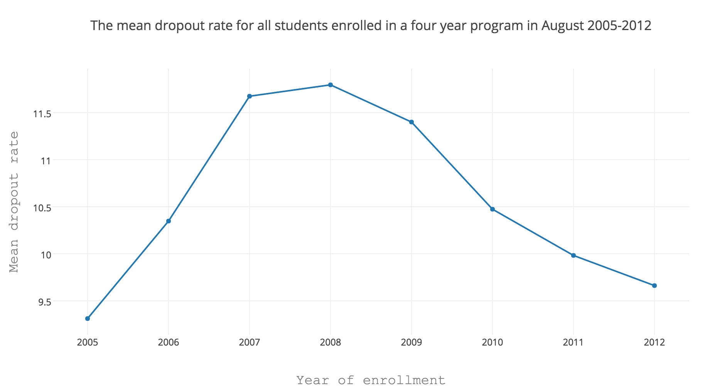
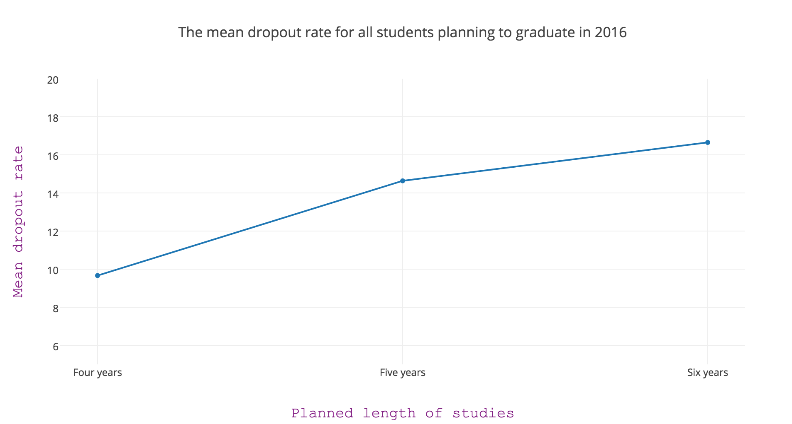
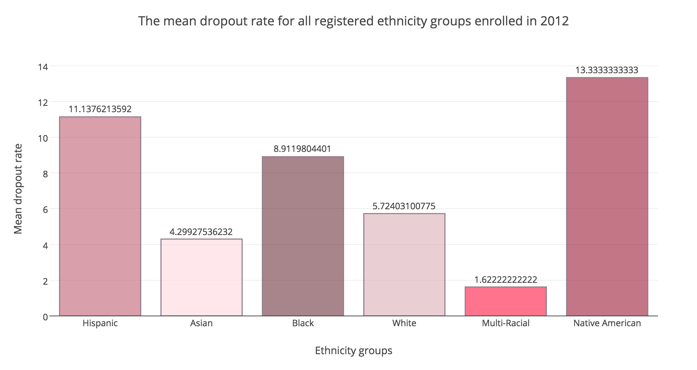
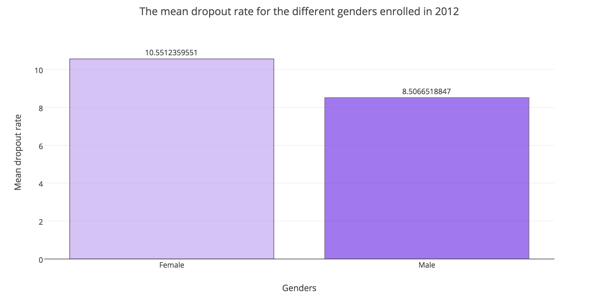

The Project
Let's look at some data from the schools. Our initial dataset was just over 30 MBs, which we extracted from. We looked
at how enrollment year, length of studies, ethnicity, gender and districts has affected the dropout rates of high school
students in New York City.
Let's look at some plots we got from analysing this data, starting with the progression over the years:

We see that the dropout rates peaked for those enrolled around the time when the financial crisis hit, in 2008, but have
been getting steadily lower over the last few years. Note that these are numbers for students enrolled at a certain year,
they could have dropped out any time after that.
Next, we look at the dropout rates based on the planned length of studies:

The dropout rates vary a lot more between the planned length of studies than the enrollment year. Perhaps unsurprisingly,
those who plan a longer time for their studies have a much greater chance of dropping out along the way.
Now for the barplots, comparing different ethnicities:

These results are very stereotypical. The Asian have the lowest dropout rates, followed closely by Caucasians.
It's higher for black, hispanic and especially Native American students, which is a known problem in the U.S.
The Multi-Racial have an extremely low dropout rate, but we only had nine data samples from then, out of which
seven had a zero percent dropout rate.
Moving on to the genders:

The difference between the genders is not very big, but females have a slightly higher dropout rate than males.
The lists showed 451 females and 445 males so the difference cannot be attributed to uneven data sets.
Finally, we have barplots for the distribution between districts: